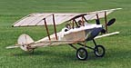
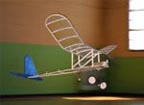
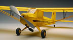

|
From time to time other modelers have sent me photos of their aircraft built from my plans. This page features those models. Click the builder names below to view photos and notes of their individual projects.
Email me if you have a project you would like featured.
| ||
|  |  |  |
|---|---|---|
| 1916 Bellanca Tractor | Flying Aces Stick | J3 Kitten |
| Karl Bambas | John Stennard | Who's will be first? |
| Lee Denny | ||
| Jerry Gordon | ||
| Patrick Dottax | ||
| Bruce Shepard | ||
| Glen Sayers | ||
|
To all the builders: I extend a sincere thank you for your images and your stories. I am sorry it has taken so long for me to post these.
To future builders, all three of these designs were originally featured in RC Microflight. Unfortunately RCMF is no longer published. The J-3 Kitten is available as a laser cut kit from Peck Polymers. Contact me directly at the email address below if you would like to build the Bellanca or FA Stick.
|
Return to Home Page
Copyright 2003-2013, Thayer Syme. All rights reserved